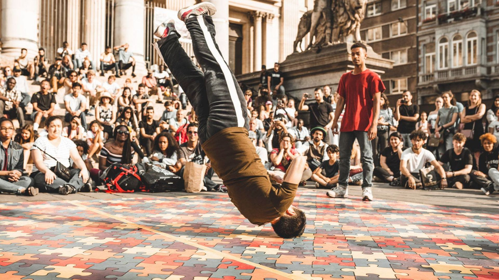
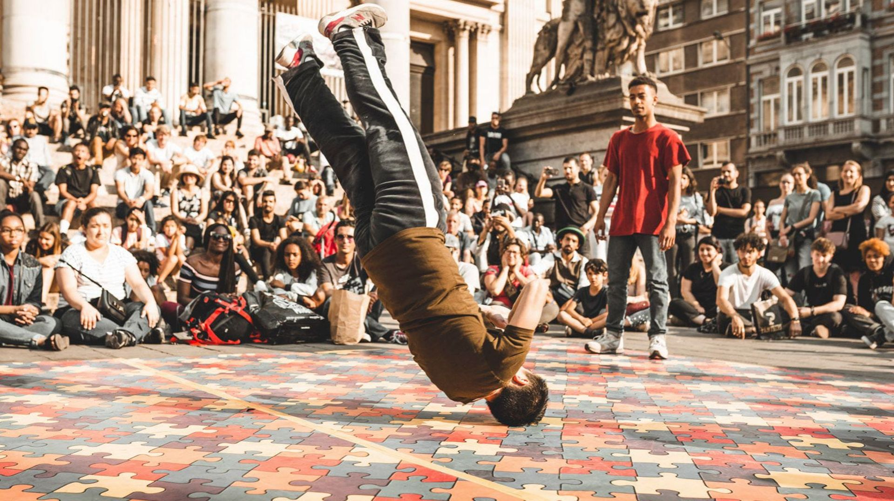

Le Breakdance : L’art de la rue devenu sport mondial
📍 Où et quand le breakdance est-il apparu ?
Le breakdance, aussi appelé breaking ou b-boying, est né au début des années 1970 dans les quartiers du Bronx à New York, aux États-Unis. Ce style de danse fait partie intégrante de la culture hip-hop, qui regroupe quatre disciplines majeures : le rap, le DJing, le graffiti, et bien sûr la danse.
Influencé par des styles variés comme la capoeira, la gymnastique, les arts martiaux et le funk, le breakdance s’est d’abord développé dans la rue, lors de fêtes de quartier appelées block parties, animées par des DJ.

✒️ Pourquoi le breakdance est-il apparu ?
Le breakdance est avant tout une réaction culturelle et pacifique à la violence urbaine. À une époque marquée par la pauvreté, les tensions raciales et les guerres de gangs, les jeunes du Bronx choisissent de régler leurs différends non pas avec les poings, mais avec des mouvements de danse spectaculaires.
Les battles remplacent les bagarres. Le sol devient une scène où l’on exprime son style, sa rage, sa fierté, et son appartenance à un crew. Le breakdance est à la fois un sport, un art, et une manière de dire : « Je suis là, regarde-moi, respecte-moi. »
🌟 Qui sont les pionniers du breakdance ?
Les premiers à codifier et populariser le breakdance sont les membres du Rock Steady Crew, fondé en 1977. Ce crew emblématique joue un rôle majeur dans la diffusion mondiale du breaking grâce à des apparitions dans des films, clips et compétitions.
Parmi les pionniers légendaires, on retrouve :
Crazy Legs : figure centrale du Rock Steady Crew.
Ken Swift : connu pour ses footworks techniques.
: maître des mouvements fluides et du popping.
Ces artistes ont contribué à faire du breakdance un art reconnu, bien au-delà du Bronx.
🇫🇷 Le breakdance en France
Le breakdance arrive en France au début des années 1980, notamment grâce à l’émission culte "H.I.P. H.O.P." animée par Sidney en 1984, la première émission de télé entièrement dédiée à la culture hip-hop en Europe.
Très vite, des jeunes s’approprient cette danse dans les banlieues, sur les places publiques, ou dans les halls d’immeuble. Des crews français comme :
Aktuel Force
Vagabond Crew
deviendront des références mondiales en remportant des compétitions internationales.
Le breakdance s’impose dans les MJC, les cités et les festivals, comme une école de rigueur et de créativité, un outil d’ascension sociale et artistique.
🎨 Aujourd’hui : le breakdance est-il toujours "de la rue" ?
Aujourd’hui, le breakdance continue de vivre dans la rue, mais il a aussi accédé à une reconnaissance mondiale. Des compétitions comme Red Bull BC One, Battle of the Year ou Undisputed réunissent les meilleurs danseurs du monde entier.
Mais surtout, le breaking a été intégré pour la première fois aux Jeux Olympiques à Paris 2024. C’est une révolution : cette danse urbaine entre désormais dans l’arène du sport mondial.
Ce tournant soulève une question : le break peut-il rester authentique tout en devenant un sport institutionnel ? Beaucoup de danseurs répondent : Oui, tant que l’esprit de la rue, la liberté et le respect restent au cœur du mouvement.
 
